Heel pain, ingrown toenails, nail fungus, verrucae and diabetic feet.
Dr Sami Tabib treats them at the Chiropody Center on Jumeirah Beach Road in Dubai, and at the Imperial College London Diabetes Centre in Abu Dhabi. Adults and children. Dr Sami wants you to understand what's going on with your feet, because informed patients make better decisions.
- Your doctor
- Dr Sami Tabib, Doctor of Podiatric Medicine (DPM)
- Licensed by
- Dubai Health Authority (DHA) and Health Authority of Abu Dhabi (HAAD)
- Custom orthotics
- Made for you at Langer labs in the UK
- Nail fungus
- GenesisPlus laser, at the Dubai clinic
- Payment
- Cash, Mastercard, Visa, AMEX and debit cards
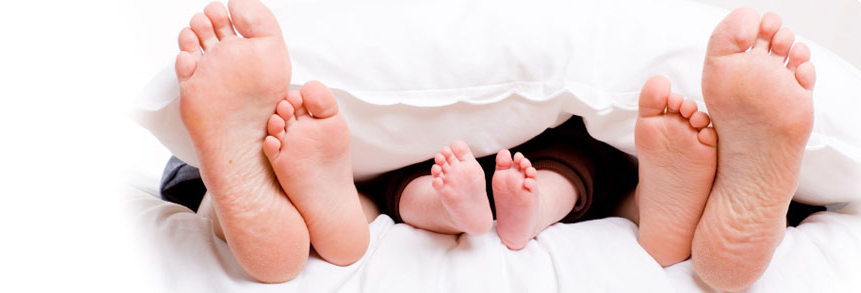
Dr Sami Tabib, DPMPodiatrist, with his podiatry team
Two clinicsJumeirah Beach Road, Dubai and Al Khaleej Al Arabi Street, Abu Dhabi
The whole familyFrom in-toeing toddlers to diabetic foot care
What we treat
The things people come to us for most. If your problem isn't here, call anyway. Dr Sami sees a wide range of foot conditions, and the full list is below.
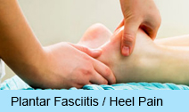
Heel pain / plantar fasciitis
Pain under or inside the heel, usually worst on the first steps out of bed. Most people with a "heel spur" don't need it removed.
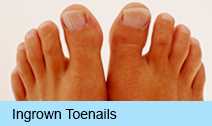
Ingrown toenails
We treat ingrowing toenails with phenol matricectomy, without surgery.
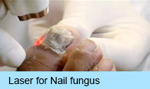
Nail fungus laser
GenesisPlus laser at the Dubai clinic. A session takes about 40 minutes for 5 to 10 nails. What to expect
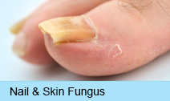
Nail & skin fungus
Athlete's foot and fungal nails. Plenty of things look like athlete's foot, so have it checked before you spend on creams.
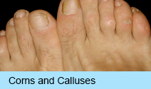
Corns & calluses
Thick skin from pressure or friction. We pare it down and look for the cause, which is often the shoes.
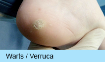
Warts / verrucae
Picked up around pools, on gym and yoga mats and in hotel showers. Over-the-counter treatments rarely reach deep enough.
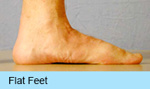
Flat feet
In adults and children. Many flat feet never hurt. When they hurt, custom orthotics are often part of the treatment.
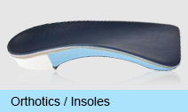
Orthotics / insoles
Custom made at Langer labs in the UK from a mould or a scan of your feet. Coming for orthotics?
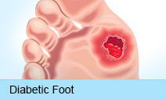
Diabetic foot
Everyone with diabetes should have a podiatrist. On your first visit Dr Sami tells you if your feet are low or high risk.
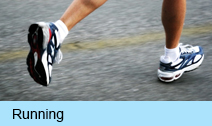
Runners
Which running shoe suits your arch: low, normal or high. And what we know so far about barefoot running.
Also treated
General chiropody too: we file nails, corns, callus and cracked heels with proper machines.
- Bunions
- Hammertoes
- Heel spurs
- Trauma and athletic injuries
- Non-surgical treatment for neuromas
- Tendon and joint pain
- Arthritis
- Sports injuries
- Infections and ulcerations
- Burning pain
- Unexplained foot swelling
- Restless legs
Children's feet
Pain is not normal. Your child should not have pain. "Growing pains" can be a sign of something more serious.
Dr Sami treats children of all ages. The most common things we see in children are heel pain, flat feet, ingrown nails, warts and sprains. All children have flat feet until about 5 or 6, when the arch develops, so flat feet on their own aren't a worry.
Bring them in if they
- complain of pain in the feet
- are clumsy when running
- sit on the sidelines while others play
- have ankles that roll in, seen from behind
Children's foot conditions we treat
- In-toeing
- Out-toeing
- Toe walking
- Crooked toes
- Heel pain
- Flat feet
If a child needs them, orthotics are made to their feet and help the foot mature in a good position.
Laser for nail fungus
Thick, yellow or crumbly toenails are usually fungus (onychomycosis). At the Dubai clinic we use the GenesisPlus laser, an Nd:YAG 1064nm laser cleared by the FDA for nail fungus. The light passes through the nail and heats the fungus. Here's how it goes.
The day before
Take off all nail polish and nail decorations.
The session
About 40 minutes to treat 5 to 10 nails. The laser passes over the nails and the skin around them a few times. Your nail feels warm, and most people describe a small hot pinch at the end that goes quickly.
Afterwards
Your nail may feel warm for a few minutes. Most people go straight back to what they were doing.
The months after
Nails grow slowly. As the new nail grows out you see the difference, but a whole clear nail can take up to 12 months. The number of sessions depends on how badly each nail is infected, and fungus is everywhere, so we'll show you how to keep it from coming back.
Coming for orthotics?
Orthotics are more than an arch support. They're made to your feet to correct how the bones and joints line up, and they can help with flat feet, high arches, plantar fasciitis, tendonitis, neuromas, shin splints, and knee, hip and back pain.
First Dr Sami checks whether you actually need them. He examines your feet standing and lying, and watches how you walk. Then he takes a plaster mould or a digital scan, and the orthotics are made at Langer labs in the UK.
Bring any insoles or orthotics you already have, shop-bought or custom, and the shoes and trainers you wear most. Sometimes old orthotics only need adjusting.
If you have diabetes
Every diabetic should see a podiatrist. If your circulation is good and you have no numbness, burning or tingling, once a year is usually enough. If you're higher risk, it's every 2 to 3 months.
At home, look at your feet every day, or ask someone to, or use a mirror. Look for cuts, blisters, redness, warmth and changes in the nails. A few of the rules we give our patients:
- Don't soak your feet, and keep them away from hot sand and heaters.
- Don't use corn plasters or corn removers, and don't shave off corns yourself.
- Cut toenails straight across. If one is ingrowing, call us.
- Never go barefoot, indoors or out, and don't wear flip-flops.
- Break in new shoes two hours at a time.
FAQs
The questions we're asked most at the front desk.
Do you do general chiropody?
Yes. We file nails, corns, callus and cracked heels using proper machines.
I have a heel spur. Does it need to be removed?
Usually not. Heel pain mostly comes from the plantar fascia, the band under your arch, getting inflamed. The pain comes first and the spur comes later, and the spur usually isn't what hurts. Plenty of people have heel pain with no spur, and spurs with no pain. Dr Sami can show you how heel pain is treated without surgery.
Should children see a podiatrist?
Yes. Your child should not have pain in their feet. Dr Sami is trained in children's foot and ankle problems and sees children of all ages.
What are orthotics?
Devices made to your feet that you wear in your shoes. Dr Sami takes a plaster mould or a digital scan, and the orthotics are made in the lab from that. They control the foot and help line it up, which also affects your ankles, knees, hips and back.
I'm diabetic. How often should I come?
On your first visit Dr Sami tells you if you're low or high risk. Low risk is usually once a year. Higher risk, with poor circulation or numbness, every 2 to 3 months.
Do you take credit cards?
Yes. Cash, credit cards (Mastercard, Visa and AMEX) and debit cards.
Where to see Dr Sami
Dr Sami sees patients in Dubai and in Abu Dhabi. To book at either clinic, call 04 348 4092 and tell us which city suits you and whether you've seen Dr Sami before.
Imperial College London Diabetes Centre
Al Khaleej Al Arabi Street, Abu DhabiAt both clinics Dr Sami sees the full range, from heel pain and ingrown toenails to nail fungus, verrucae and diabetic foot disease.
Laser for nail fungus is at the Dubai clinic.
Call to book: 04 348 4092